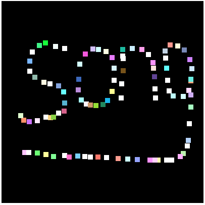

对应《WebGL编程指南》代码：05-ColorPoints
要点：注册js事件、匿名函数、坐标转换、g_points.push()
知识点
一、为何使用匿名函数？
先看示例：
1 | // 注册鼠标点击事件响应函数(匿名函數) |
当你要画一个点时，需要传入三个变量（gl、canvas、a_Position），这三个变量是定义在main()函数中的局部变量。
当用户点击鼠标时，浏览器会自动调用注册到<canvas>的ommousedown属性上的函数，并传入event（后面简写为‘e’）参数，通常你会这样写：
1 | canvas.onmousedown = mousedown // 注册响应函数 |
但是，这样写会出现一个问题，定义在main()函数外部的mousedown()函数就无法获取 main函数中的局部变量，而使用匿名函数就可以解决这个问题。
当用户点击鼠标后，程序先调用匿名函数function(e)，再调用匿名函数中的click()传入参数。
当然，这里也可以使用ES6的箭头函数更加简洁：
1 | canvas.onmousedown = ev => click(ev, gl, canvas, a_Position); |
二、坐标转换
区别：
①客户区原点(0,0)：位于浏览器视图区的左上角顶点处
②canvas原点：位于绘图区左上角顶点处（…）
③WebGL原点：位于绘图区中心点
1 | // 获取<canvas>在浏览器客户区中的坐标 |
| rect.left： | 使用*{margin:0;padding:0;list-style: none;}清除默认样式后，与客户区原点重和,即(0,0) |
|---|---|
| rect.top： | 若不清除默认样式后，canvas原点可能位于(8,8)，仅限博主浏览器测试。 |
| x | 相对于浏览器左上角顶点处的鼠标横轴位置 |
| y | 相对于浏览器左上角顶点处的鼠标纵轴位置 |
| x - rect.left：鼠标点击处相对于canvas原点位置 | 将(x,y)转换成canvas坐标系的坐标 |
| y - rect.top：鼠标点击处相对于canvas原点位置 | 将(x,y)转换成canvas坐标系的坐标 |
| canvas.height/width | 绘图区的宽高 |
| (canvas.height/width) / 2 | 绘图区的中心点 |
| (x - rect.left) - canvas.width / 2 | WebGL系统的原点 |
| canvas.height / 2 - (y - rect.top) | WebGL系统的原点 |
| ((x - rect.left) - canvas.width / 2) / (canvas.width / 2) | 将canvas坐标系下的坐标转换为WebGL坐标系中，最终渲染位置 |
| (canvas.height / 2 - (y - rect.top)) | 将canvas坐标系下的坐标转换为WebGL坐标系中，最终渲染位置 |
三、为啥用g_points.push()
因为WebGL系统中的绘制操作实际上是在颜色缓冲区中进行绘制，绘制结束后系统将缓冲区中的内容显示在屏幕上，然后颜色缓冲区就会被重置，其中内容就会丢失。也由此，每次点击后，浏览器会重新绘制之前的并绘制新点击的。
四、uniform变量
作用：从js程序向顶点和片元着色器传输“一致的”（不变的）数据。
1 | 声明变量：<存储限定符><类型><变量名> |
实例
1 |
|
1 | //ColoredPoints.js |
效果

Tips: Please indicate the source and original author when reprinting or quoting this article.